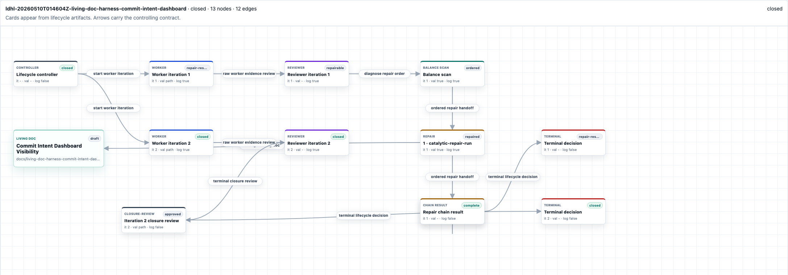
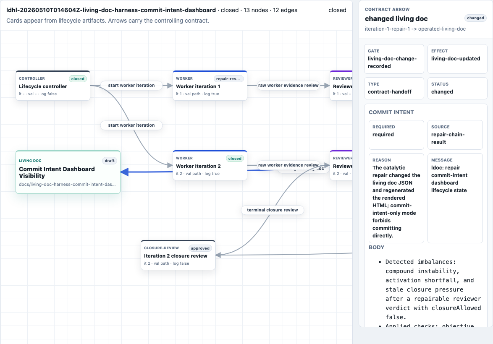

The weak point was not the model run. It was the moment after the run, when somebody still had to decide what the next run should believe.
A worker could produce useful code, update the structured document that carries the objective, render the HTML, and leave behind tests. A reviewer could still say the objective was not proven. A blocker issue could be real evidence and still not be a valid stop condition. The system needed to preserve those distinctions without relying on the supervising chat to remember them.
That is the handoff bottleneck. Once work crosses from one bounded model run to the next, the question stops being "did anything useful happen?" and becomes "what state is the next unit allowed to act on?" If the answer lives in a transcript, the next unit is reconstructing. If the answer lives in a report, the lifecycle has already made its control decision without it.
The living doc becomes substrate when it is the operated state of that handoff: objective, stage, acceptance criteria, proof, issue state, relationship maps, and rendered surface. It is not just read after the run. It is the thing each unit reads, changes, checks, and passes forward.
The concrete run
The run is docs/living-doc-harness-commit-intent-dashboard.json. Its objective was to make repair-unit commitIntent visible in the dashboard and prove a lifecycle invariant: only objective closure or an explicit user stop may halt the loop.
The same concepts are registered in docs/blog-glossary.html as inference-time harness, living doc / portable artifact, contract-bound inference unit, and contract handoff. The implementation surfaces are in scripts/living-doc-harness-iteration.mjs, scripts/living-doc-harness-dashboard-server.mjs, and the dashboard/lifecycle contract tests.
The first version of this run exposed a real failure mode. The harness created issue #217 and stopped at a true-block state after a worker-runtime limitation. That was useful evidence. It was not success. The living doc later recorded the defect explicitly: issue creation, failed tests, missing proof paths, runtime limits, and repairable states are continuation inputs for the next inference unit, not terminal states.
That distinction is what makes the article's title precise. A report would say that the run encountered a blocker and record the issue. A substrate keeps enough state alive for the controller to route the next inference unit without treating the blocker as closure.
What changes
The standalone lifecycle harness wraps model calls in contracts. A worker is one contract-bound inference unit. A reviewer is another. Balance scan, repair skill, closure review, and post-flight summary are also units. Each unit receives a bounded prompt plus artifact paths, then emits artifacts and a verdict.
The important capability is not that the units have names. It is that the units can disagree with each other while staying inside one conserved state. A worker can say "I changed these files." A reviewer can say "the objective is still not proven." A repair unit can say "I changed the living doc and rendered HTML, but I am only allowed to emit commit intent." The controller can route from those claims because they are written into contracts and artifacts, not implied by chat.
A report explains what happened.
A substrate decides what may happen next.
This gives the lifecycle four concrete capabilities.
First, it can resume work without pretending the previous run closed. In scripts/living-doc-harness-iteration.mjs, non-closure verdicts are normalized into continuation. The contract tests assert that true-block and closure-review denial write terminalAction as null and start a following inference iteration.
Second, it can keep proof attached to the objective. The commitIntent living doc keeps acceptance criteria, proof required, acceptance tests, and repair evidence together. A dashboard change is not enough. The proof has to show that graph and inspector data come from lifecycle/repair-chain artifacts.
Third, it can make side effects inspectable. The dashboard graph exposes commitIntent.required, reason, message, body, and changed files. The graph contract test checks the repair-unit-to-living-doc-1-2 edge and verifies that commitIntent.source is repair-chain-result, not a hard-coded display fixture.
Fourth, it can keep the controller small. The controller does not need to become the semantic owner of the objective. It needs to validate contracts, enforce stop rules, and route the next unit from evidence.
Read the run graph
The lifecycle graph answers a control question: what evidence caused the next unit to run?
Each card is either a lifecycle object or a bounded model run. Each arrow is a contract handoff. The living doc appears as its own card because it is the object being operated on, not a screenshot of work already completed.

In the first pass, reviewer inference did not grant closure. That sends the lifecycle into repair rather than terminal success. The balance scan diagnoses the repair order. The repair unit changes the living doc and rendered HTML. The repair-chain result records what changed and what commit intent should exist. Only then does the later worker iteration run against the repaired substrate.
The graph is useful because it forces the handoff to be visible. It shows the state transition from worker evidence to reviewer verdict to repair path to new worker input. The reader can inspect whether the system is routing from artifacts or merely narrating a plausible path.
The arrow carries the contract
The clearest proof is not the node. It is the arrow.

changed living doc arrow exposes gate, effect, status, artifact paths, and commitIntent evidence. The handoff is data the controller and operator can inspect.In the dashboard server, the changed-living-doc edge is created when a repair unit changed the operated living doc or its rendered HTML. The edge contract carries changed files, commit policy, result paths, validation paths, and commitIntent. If the repair-chain result says a commit is required, the edge can expose the proposed message and body. If no commit is required, the node can expose that state instead of hiding the field.
That is the difference between a diagram and a control surface. A diagram can show "repair happened." A contract handoff says which artifact made that claim, what changed, what gate was satisfied, and what the controller may trust next.
The controller rule
The controller's rule is intentionally narrow. If the objective is proven, the lifecycle may close. If the user explicitly stops it, the lifecycle may stop. Everything else becomes continuation input.
The code had to learn that rule the hard way. The earlier run treated a blocker as terminal enough to create a defect trail. The repaired controller path now keeps non-closure states alive as handoffs. The living doc records this as an acceptance criterion: the controller must not expose or enforce max-iteration exhaustion, blocker classification, issue creation, failed tests, missing proof paths, runtime limitations, or repairable states as terminal.
That is why the living doc has to be substrate rather than report. The stop rule depends on the current objective, acceptance criteria, proof ladder, source state, and user-stop evidence. Those are not decorative fields. They are the control inputs that prevent useful progress from masquerading as completion.
What this unlocks
Once the living doc is the operated substrate, model runs can become typed units instead of one-off prompts. A worker has one contract. A reviewer has another. A balance scan has another. A repair skill has another. A closure review has another. Their outputs can disagree, but the disagreement lands in the same document state.
That makes the next abstraction visible: an inference-unit type registry. The useful question is no longer only "what should the prompt say?" It is "what input contract does this unit accept, what artifacts must it inspect, what verdicts may it emit, and which next unit types may it request?"
The registry should not replace the living doc. It should make the lifecycle honest about the units that operate over it. The stable primitive is simpler: a contract-bound inference unit runs over a living doc, emits artifacts and a verdict, and gives the controller enough evidence to route the next unit.
Limits
A substrate does not make bad objectives good. A weak acceptance criterion can still pass too easily. A relationship map can still imply behavior that no artifact supports. A proof ladder can still overclaim. A controller can still be too shallow if its contracts do not capture the right evidence.
What changes is where those failures appear. They become visible as rejected closure, repairable state, missing proof, stale relationship map, or continuation contract. The failure is no longer hidden in the supervising conversation.
That is the operational meaning of the title. A report is written after the system has already decided what happened. A substrate is the shared state that lets the system decide, carefully, what is allowed to happen next.
 From the model
From the model